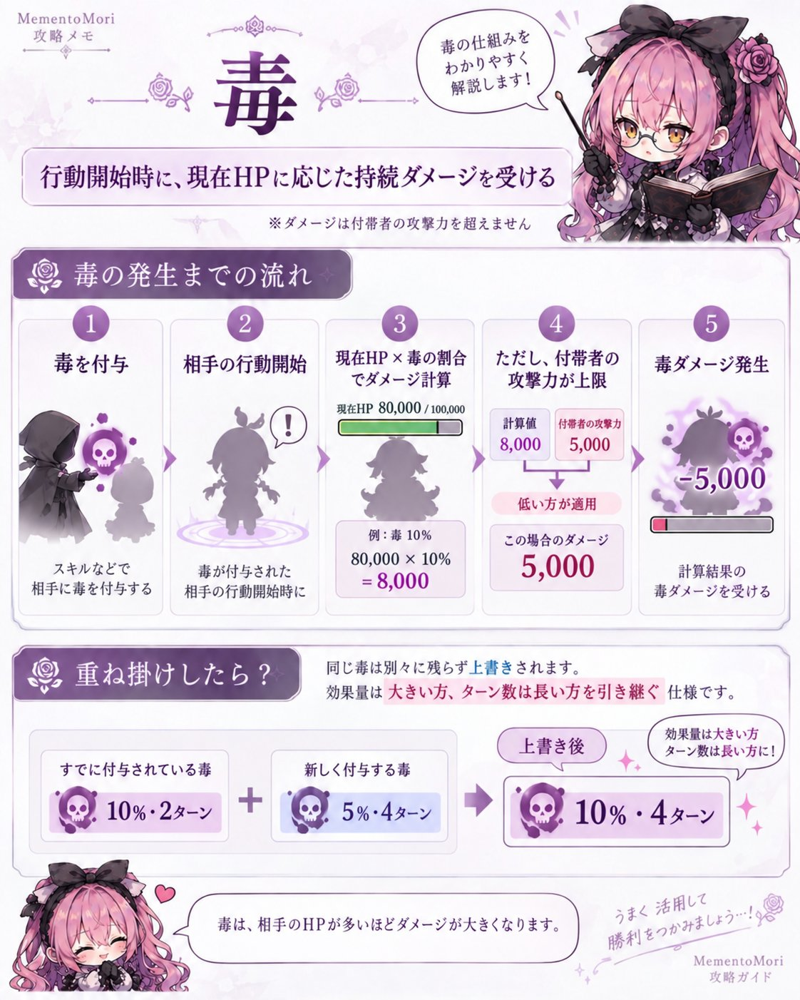

ひとことで
毒は、付帯しているキャラが毎ターン行動開始時に、現在HPに応じた持続ダメージを受ける弱体効果です。
毒ダメージは、毒を受けているキャラの攻撃力を超えません。

仕組み
- スキルで毒を付与する。
- 毒を受けているキャラの行動開始時に発動する。
- 毒を付与したスキルごとの「現在HP×○%」でダメージ量を計算する。
- 計算したダメージ量が毒を受けているキャラの攻撃力を超える場合は、攻撃力の値が毒ダメージになる。
同じ毒を重ねたら？
ゲーム内ヘルプでは、毒は同じ種類の効果を重ねても別々には残らず、上書きされると説明されています。
上書きされた後は、効果ターンは長い方、効果量は大きい方を引き継いだ1つの毒になります。
例として、毒A「現在HP×10%・残り2ターン」に毒B「現在HP×5%・4ターン」が重なると、「現在HP×10%・4ターン」の毒1つになります。
毒を付与するキャラ
| キャラ／スキル | 付与確率 | 毒ダメージ | 持続 | 特徴 |
|---|---|---|---|---|
| コベル S2 山の恵み…？ | 70% | 現在HP×10% | 2ターン | 回復と条件火力を併せ持つ |
| モーザ S1 レストインピース | 数値表記なし | 現在HP×3% | 2ターン | 専用武器で毒性能が上がる（Lv1で現在HP×4%、Lv2で4ターン、Lv3で現在HP×5%） |
| ルナリンド S2 ディスペアード | 数値表記なし | 現在HP×15% | 3ターン | 対象の魔力が自身より低い場合に付与する |
| [花束の魔女]ナターシャ S2 花束をあなたに | 数値表記なし | 現在HP×4% | 2ターン | 専用武器Lv3で現在HP×5%になる |
| [墓守の夏休み]モーザ S1 レストインパラダイス | 数値表記なし | 現在HP×3% | 4ターン | 付与した毒を後続のスキルでも使う。専用武器Lv3で現在HP×5%になる |
- 付与確率を数値で書いているのはコベルS2の70%だけです。モーザS1・ルナリンドS2・[花束の魔女]ナターシャS2・[墓守の夏休み]モーザS1は、ゲーム内のスキル説明に数値の確率がありません。
- 数値表記がないことは、必ず付与されることを意味しません。毒は弱体効果なので、スキル固有の付与確率だけでなく弱体効果命中率・耐性率の影響を受けます。
- ルナリンドS2には「対象の魔力が自身より低い場合」という付与条件があります。
毒を利用するキャラ
毒は「ダメージを与えるだけ」の効果ではなく、別のスキルの発動条件になる場合があります。
付与する側
毒を付与するキャラ5体の表にまとめています。
参照する側
- モーザ S2 葬送の合図対象が毒を付帯中なら、不治を4ターン付与する
- [墓守の夏休み]モーザ S1 レストインパラダイス毒を付与した後、毒を付帯している敵のうち攻撃力が最も高い敵の攻撃力を吸収する
- [墓守の夏休み]モーザ S2 水底の幽かな声毒を付帯している敵1体につき攻撃回数が1回増える（最大9回）
- [墓守の夏休み]モーザ S3 それが墓守の仕事毒を付帯している敵からの攻撃は遮断が75%になる（カウンタダメージも75%）
- [墓守の夏休み]モーザ S4 ライラの守り毎ターン開始時、毒を付帯している敵1体につき自身の攻撃力の増加量が+5%大きくなる（最大20スタック）
強化する側
- [花束の魔女]ナターシャ S3 消えない過去劇化を付与し、自身の受ける持続ダメージを100%、攻撃力が高い敵3体の受ける持続ダメージを50%増加させる（毒は増加しても付帯者の攻撃力という上限を超えない）
出典
出典：ゲーム内ヘルプ／ゲーム内スキル説明